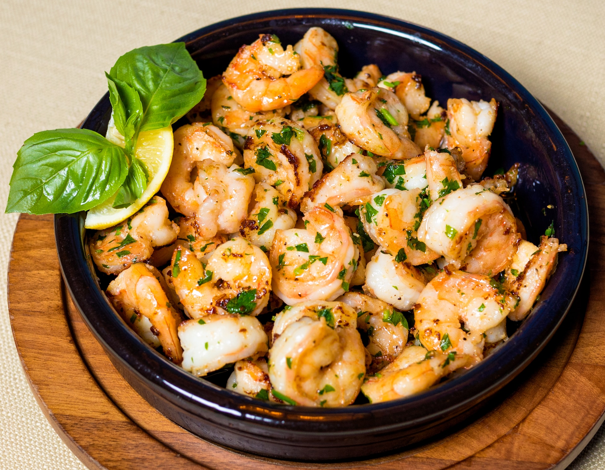

Gambas al Ajillo
Any meal will be en fuego with this sizzling recipe for Spanish Garlic Shrimp, or as we say in Spain, Gambas al Ajillo. These flavor bombs will have your taste buds doing the flamenco, as plump shrimp dive into a pool of garlic, olive oil, and fiery smoked paprika. You'll shout ¡Olé! with every delicious bite, and your friends will be begging for the recipe faster than they can say “mas, por flavor!”
So, what are you waiting for? Put on your apron and ¡Vamos a cocinar!
Photo by Farhad Ibrahimzade on Unsplash
Prep Time:
15 mins
Cook Time:
5 mins
Total Time:
20 mins
Servings:
4
Ingredients
- 1 pound frozen large shrimp (21-25 count) - thawed, peeled, and deveined
- 1 teaspoon hot smoked paprika (Optional)
- kosher salt to taste
- 4 cloves garlic
- ¼ cup extra-virgin olive oil
- 2 tablespoons dry sherry
- 1 tablespoon chopped Italian flat-leaf parsley
Directions
- Place shrimp in a large bowl and season with paprika and kosher salt; mix well to coat.
- Slice garlic into thin slices. Heat oil in a skillet over medium heat; add garlic and cook until golden, about 2 minutes. Add shrimp and increase heat to high. Toss and turn shrimp with tongs until starting to curl but still undercooked, about 2 minutes.
- Pour in sherry. Cook, stirring continuously, until sauce comes up to a boil and shrimp is cooked through, about 1 minute more. Remove from heat. Stir in parsley.